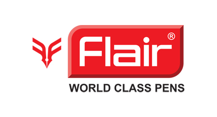

Flair is an Indian company that manufactures
Flair is credited with introducing gel pens to
Flair is an Indian company that manufactures
writing instruments, known for its diverse
range of pens including gel pens, ball pens,
and fountain pens
Flair is credited with introducing gel pens to
the Indian market and later expanded into
highlighters and correction pens.
ratings-: *** 3 stars